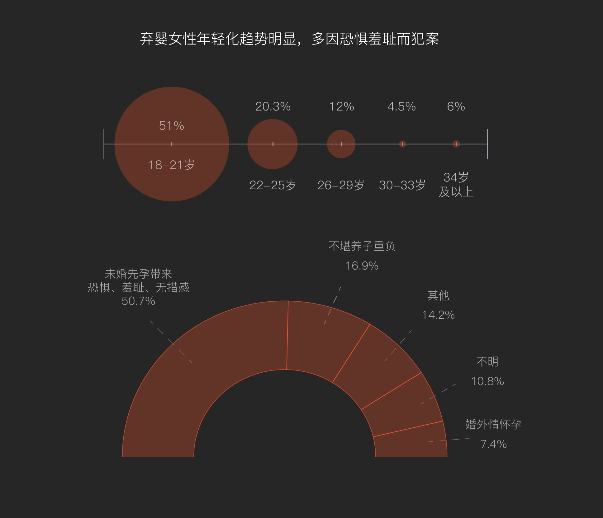

“她”杀：困在爱恨牢笼里的致命女人
提起暴力犯罪
女性往往以受害者的形象出现
其作为加害者的可能性则容易被忽略
女性杀人，其实并不罕见
是什么促使她们走上绝路？
为情所困、自我防卫、还是谋财害命？
这需要被关注，却乏人问津
2287份判决文书
勾勒出“致命女人”的整体形象
我们探寻“她”杀背后的原因
并以此为据，试图找到打开“牢笼”的钥匙
让更多女性挣脱牢笼而不是踏上歧途
“村里死人了，听说是被老婆砍死的。”
“那两口子感情不怎么好，吵了二十多年了。”
丈夫沉沉睡着，她却举起了刀，露出的手臂上满是淤青。男人突然翻了个身，她身体一颤，照着脑袋就砍了下去……看着倒在血泊里的丈夫，她开始犹豫，是自首坐牢，还是逃往他乡？
文化低、积怨、刀、杀夫、农村……我们根据裁判文书网相关数据，找到了女性杀人的常见情形。苦衷不能抵消罪恶，但却是我们预防罪恶的关键。部分女性困于情感纠葛的牢笼里，即使深受伤害也难以离开。我们将利用2287份女性故意杀人罪的判决文书来解读“致命女人”的形象，从她们的杀害对象中探寻原因，并以此为据，找到预防悲剧发生的措施。
2014年1月1日起，最高人民法院、全国所有高级人民法院和中级人民法院都须上网公布裁判文书。因此，我们选取裁判日期为2014-2020年的女性故意杀人罪的判决文书作为分析对象。根据法律规定，我们筛除了未成年人相关判决文书，同时由于实际案发时间早于裁判时间，为了方便分析，我们筛除了案发时间早于2013年的判决文书，最终共计得到2287份。
其中，有560位被告女性患有精神疾病，占比24.5%。
所有案件当中，杀害对象为丈夫的最多，占32.2%。
其次是杀害子女，占比为22.6%。
剩下的还有杀害婆婆、男友、邻居、前夫等众多案件，占比为45.2%。
她们为什么杀掉最亲密的人？我们从数据中归纳出了一些共性，并借助真实故事，来描绘此类案件的特征。
2014年2月2日，大年初三，正是长丰村走亲戚的热闹日子，年近七十的宗志强却躺在手术室里。他的脑后方大概挨了八九刀，左脸颊一刀见骨，直直划到耳朵上。
下午三四点，宗志强从昏迷中清醒过来，声音微弱，女儿宗红英就趴在他耳朵边上听。“太丢人了，别跟你弟弟说这事。”听到这话，宗红英心中已经了然。“不丢人，你好好养着，等她回来了，咱不要她了。”
宗志强最终也没能活下来。父亲走的这一天，母亲刘明华投案自首了。
六年后，母亲另嫁，老屋上锁，当年一家四口居住的院子已经荒草丛生。宗红英时常会念叨着过两天就去清理一下杂草，却也始终没有动身，任由荒草乱长，漫过人的小腿。
荒草掩埋了老屋的记忆，若说还有什么能与过去联接的，就只剩下唯一的一张全家福。照片被珍藏在宗红英卧室的床头柜里，边缘泛黄，背面像是被水渍浸过，皱皱巴巴。照片上的宗红英才三十来岁，距今已近二十年了。
宗红英觉得母亲算不上漂亮，她心里清楚，“我爸看不上我妈”。两人的包办婚姻自开始便不如意，此后间隙越来越深。生活成了一个牢笼，母亲被打得遍体鳞伤，却逃不出去。
“这个事持续的时间太长了，打从记事起，就是打。”父亲的打骂，母亲的伤痕，从宗红英五六岁起，就成了家常便饭。父亲脾气大，性子急躁，经常因为一些琐事，甚至毫无缘由便殴打母亲刘明华。一家四口吃饭时都安安静静的，谁也不敢贸然开腔。要是母亲哪句话说得不好，父亲就立刻大发雷霆，有时把桌子掀翻，谁也吃不了饭，有时猛然冲过去把母亲提起来拳打脚踢。
宗红英偶尔会听到母亲暗地里小声咒骂父亲，但当着面她却从不敢反抗，因为反抗换来的，只有变本加厉的殴打。
在杀夫案件中像刘明华一样因家暴而走上绝路的女性占比最大。
全国妇联发布数据显示，在我国，平均每7.4秒就有一位女性遭受丈夫殴打，每年自杀的女性有60%是因为家暴。
除家暴以外，还有很多女性因感情因素而杀害丈夫。积怨已久、移情别恋、猜忌臆想……种种感情因素促使她们走上了杀人的道路。
母亲不是没有求助过，但想要挣脱这个牢笼，绝非易事。邻居劝说、村委会调解全都无效，连回娘家寻求庇佑也会被找上门拉走。
宗红英成家后，也曾多次劝母亲离婚，并表示姐弟二人都会赡养她。但这反遭母亲刘明华一顿骂，“都是一家子，你让我离婚，妈没人养的。”母亲小学毕业，文化程度不高，平时就去地里种种庄稼，在家烧火做饭。现在年纪大了，还被打得落下一身毛病，离开了父亲，她怎么过得下去？
2013年秋后的三四个月里，几乎每天都能听到刘明华的惨叫。宗志强听信流言，误以为妻子有了外遇，自这以后，他就百般刁难刘明华。开门开晚了，打；做饭不满意，打……几乎无时无刻不在打她。
过年期间，宗红英回老家看望父母。宗志强在家里磨刀，刘明华说“你磨刀做什么？咱也不宰鸡，也买不着肉，就咱俩人，我不定哪时候就栽了。”没想到，这句话应在了宗志强身上。
“一开始我妈老笑，后来她也不笑了。”宗红英感慨， “打得忒频繁了，忒频繁了。”长期的家暴抹去了母亲的笑容，变本加厉的殴打让刘明华走上了绝路。
大年初三，趁宗志强躺在炕上睡觉时，平日里连杀鸡都不敢的刘明华举起了菜刀，照着他的脑袋砍了十余下。
刀是女性杀夫案中使用最多的武器，在736起杀夫案中共出现219次，占比29.8%。
各种刀具中，菜刀占比50%，使用率最高。水果刀、镰刀也是常用刀具。
农药、棍棒、铁锤、被子、绳子、剪刀......看似寻常的生活物品都可能成为“她”杀死丈夫的凶器。
中国政法大学的刘晓倩讲师表示
女性杀夫案件主要分为两类
一类是冲动型，在遭受家暴时反抗导致激情杀人
一类是预谋型，事先有所准备，等丈夫放松警惕时下手
由于男女力量悬殊，女性往往趁其不备，一击致命
很少存在双方打斗的情况
毒药避免了正面冲突，因此使用概率较高
由于刀等锐器随手可得，不会太过沉重
因此选择此类工具的女性最多
头部、喉颈等致命部位，受到攻击的可能性也最大
真正束缚刘明华的，不是丈夫的家暴，而是自身无法逃离的状态。刘晓倩讲师表示，女性在遭受家庭暴力后，往往会经历长期的情绪压抑。刘明华也尝试过自救，但囿于“家丑不外扬”的传统思想以及第三方劝和教育为主的解决措施，通常看不到效果。绝望无助下，这类女性在杀夫时通常带有“仇恨”“害怕”的情绪。
宗志强的暴力让妻子遍体鳞伤，隐忍几十载后刘明华举起菜刀；而下一个故事中的丈夫长期“缺位”，妻子在心灰意冷下选择携子自杀……
28岁那一年，何莹莹带着自己的龙凤胎孩子喝农药自杀，差点把孩子毒死，自己也丢了半条命。大病一场，也是大梦一场。醒来，她只想一脚踹开那个近乎“透明”的丈夫康润泽。
康润泽性子贪玩，婚前玩老虎机，婚后打牌，一点钱也攒不住。何莹莹每次跟丈夫要生活费，都像是一场“讨价还价”，她也想过出去打工挣钱，却被丈夫拦在家里带孩子。无奈之下，她只好厚着脸皮回娘家要钱，次数太多，也不好开口了。何莹莹只好透支花呗，直到两人离婚时，都还有四五千的额度没还清。
“女婿不是女婿，丈夫不是丈夫，男人不是男人。”何莹莹的父亲这样评价康润泽，“他连一个家庭的重担都挑不起。”何莹莹需要钱给孩子打疫苗，他转身就走，一夜未归；吵架中何莹莹不慎伤了手，鲜血直流，他视若不见，安坐如初。康润泽就好像家里的“透明人”一样，既不管孩子，也不爱护妻子。所谓生活，成了何莹莹一个人的独角戏。“我们两个吵架从来都不是他哄我，从来都是我哄他。”
丈夫不负责任，自己整日愁眉苦脸，在这种家庭氛围下，孩子怎能幸福？何莹莹渐渐对生活失去了希望。
29%的杀子案件是“弃婴案”，占比最高，这部分我们将在下文详细阐释。
很多杀子悲剧仍源自家庭，部分女性因痛恨丈夫而杀子泄愤。
而何莹莹这样的女性不同，她们因家庭不幸而对生活失去希望，不忍留下孩子独自受苦，这种杀害在她们眼里是变相的保护。
多次沟通无效，何莹莹也曾想过离婚，但七年的感情让她始终无法下定决心。为了迫使丈夫多顾家一点，走投无路的她只能以命相搏。2020年6月30日，她拿起农药瓶，丈夫一言不发；她打开瓶盖，丈夫仍保持沉默。
何莹莹彻底绝望了，她把两个孩子叫到跟前，给他们喝了一口农药。何莹莹的母亲急得直喊，“你（康润泽）但凡是个男的，你看自己家媳妇拿着农药，二话不说就应该上去夺农药。”康润泽仍然杵在一旁无动于衷，何莹莹心如死灰，仰头大口大口喝下了农药。
刘晓倩讲师表示，女性杀害子女时往往心存内疚和疼惜
反映到作案手段上，会尽量减轻孩子的痛苦
相对于刀类，“窒息”“溺水”“毒杀”等方式使用更多
何莹莹在毒杀孩子时选择自尽
519起杀子案件中，同时有自杀念头或行为的女性占比32%
大约是2287位作案女性自杀率（17%）的两倍
她们因各种压力对生活无望
试图将孩子作为自己的一部分一起带走
何莹莹初中毕业就离开学校打工挣钱，21岁时，她接受家中安排和邻村的康润泽相亲，两人相识一个月就领证了。何莹莹从没想过，当时幽默风趣、会逗自己开心的男人，婚后竟是如此模样。
在医院躺了三天，康润泽以照顾孩子为由，不见妻子半面。她豁出命来，得到的却只有为期两年的监外执行。
部分女性因心疼而终止犯罪
再加上低龄“弃婴”女性主观作恶性小
因此杀子案件的刑期集中于1-10年
而杀害丈夫获刑多在10年以上
判无期和死缓等重刑的比例也远超杀子案件
刘晓倩讲师认为，女性走上携子自杀的道路时，说明她们身边已无人可信，无枝可依。当前社会，大多数女性的安全感源于家庭，比起离婚，她们更愿意设法维持一个完整的家庭。何莹莹的杀子行为，本质上是一种对丈夫长期缺位的抗争。她原本可以选择离婚，但始终不忍破坏维系七年的婚姻与家庭，在希望彻底破灭后，她和两个孩子都成了牺牲品。
杀害子女的女性当中，除了像何莹莹这样因生活无望而携子自杀的，还有更多女性（占比29%）在孩子刚出生时就遗弃了他们。

51%的作案女性年龄在18~21岁之间，低龄化现象十分明显。
部分少女缺乏生理常识和法律常识，在生产前甚至对此毫不知情。既羞耻又惊慌失措，悲剧就此发生。这样的情况超过一半。
另有16.9%的女性因无力承担治疗或抚养孩子的费用，从而决定遗弃。
杀害丈夫或子女的女性占比超过一半，以上述两个故事为例，我们讲述了刺激女性作案的直接因素，但这些女性自身也存在着不容忽视的问题。接下来我们将结合整体作案情况，总结女性致命案件的特征，同时深入阐述致命女人的自身因素。
河北省三和时代律所的王律师说，“女性犯罪，起因多是感情纠葛”，而男性则更为直接（例如经济驱动或性冲动）。不同诱因也导致男性的作案对象更加多元，与之相比，女性杀人多围绕家庭展开，且与其关系越亲密的社会角色，受到伤害的可能就越大。除丈夫、子女以外，杀害男友、婆婆和邻居的也不在少数。
女性“杀熟”现象，本质上还是男女不平等的副产物。中国人民大学法学教授程雷表示，女性尚未获得与男性同等的就业机会，这意味着女性的社会关系主要集中在家庭层面，因此犯罪多产生于家庭。
除了社会关系以外，从年龄维度来看，犯罪女性和男性也有显著差别。
作案女性的年龄呈现出“双峰值”特点。杀子案件的女性相对年轻，集中于26-29岁，杀夫的多为中年女性，集中于42-45岁。有研究指出，男性在20-24岁犯罪活动最为频繁，具备青年化和冲动性的特点。与之相比，女性杀人行为具备更强的隐忍性。
不管有什么苦衷，杀人都是违法的。作为悲剧的缔造者，致命女性的自身问题也不容忽视。
刘晓倩讲师表示，女性情绪更加丰富细腻，容易产生对他人的依赖和顺从。务农、无业的女性占到了83%，这表明绝大多数犯罪女性难以做到经济自立，在生活上主要依靠男方。从某种程度上说，经济上的不独立加强了女性对男性的心理依赖。在家务农的刘明华和无业的何莹莹在心理层面上都不想“拆开一个家”，尽管她们的丈夫做得并不合格。
务农、无业的女性占到了83%，这表明绝大多数犯罪女性难以做到经济自立，在生活上主要依靠男方。从某种程度上说，经济上的不独立加强了女性对男性的心理依赖。在家务农的刘明华和无业的何莹莹在心理层面上都不想“拆开一个家”，尽管她们的丈夫做得并不合格。
这种无稳定或正当职业的状态与受教育水平偏低又有着密切联系。
过去几十年来，虽然女性的社会地位有所提升。但不可否认的是，就业、教育乃至家庭生活层面因性别差异带来的不平等仍旧存在。
较低的学历除了增加就业难度以外，还使她们缺少法律常识。部分女性并不知道杀死自己的新生儿违法，遑论运用法律保护自己。南京大学社会学院副教授刘柳的研究表明，女性在遭受困难时往往求助无门甚至不知求助。
文化水平低下，也让她们难以破除固化的传统观念。
超过七成的女性暴力犯罪发生在县、乡镇和农村等地区。在农村，“居家看孩子”往往被认为是女性应尽的职责，离婚也被看做“家丑”。囿于这些落后的传统观念，很多女性没有外出工作的机会，没有勇气也没有能力离开家庭，以致矛盾不断激化。
值得注意的是，52.3%%的弃婴案发生在城市。即便在较为发达和相对开放的地区，未婚先孕少女也会被传统观念禁锢，羞于向外界求助，从而导致悲剧发生。
还有一类女犯较为特殊，她们在作案时伴有精神类疾病发作，占整体的23.6%。其中，杀害子女的比例最高，为32%。
这些女犯在作案时往往伴随着自杀行为（21%），且单独作案率极高，为97.5%，这些比例均超过整体。她们沉浸在自己的世界里，情绪消极，很容易受到刺激（孩童哭闹吵闹等），从而做出极端行为。
困于情绪，陷于情感，很多女性曾沦为情感的“囚徒”，倘若有一把钥匙可以打开牢笼，也许暴力犯罪就不会发生。
北京大学法律系教授康树华的研究表明，我国女性杀人犯罪的趋势显著增加。最高人民法院数据显示，2010-2019年间，女性罪犯所占比重从5.3%上升到10.3%，十年间几乎翻倍。“我觉得一个家庭女性的榜样力量是强于男性的，对家庭付出更多。母爱缺失对青少年的成长极为不利，会成为一个恶性循环。”李警员如是说。在女性暴力犯罪趋势增加的背景下，如何预防悲剧发生，对当代及下一代来说都尤为重要。
传统观念里，一个合格女性的形象总是离不开家庭，维护家庭似乎凌驾于女性自身权利之上。研究表明，由于城乡二元结构长期存在，农村大多信息封闭、价值规范趋同且社会聚合力较强，其性别观念较城市更为传统。剥离女性自我意识的婚姻观念是束缚女性的第一道枷锁。
这种错误的婚姻观反映到农村集体上，又造成了“再婚难”的问题。中国社会科学院的研究表明，即使当代农村男性数量过剩，主要婚龄阶段 (20~49岁) 的离异女性再婚率也并不高。舆论环境对离异女性的“苛责”，提高了离婚的代价，让部分女性退无可退。个人观念的落后构成整体的舆论压力，形成了恶性循环。
陈旧的观念将女性束缚在家庭里，久而久之，她们的思想也陷入了情感的囚笼。社会性别研究专家荣维毅表示，只有“获得了主体自我的认同, 才是女性最终获得解放的标志，也才能在社会发展中实现自我价值”。女性应有自立、自爱、自制的意识，不轻易被情感和环境左右。
研究显示，文化素质较高的女性，具有更强的独立性、自主性和维权意识。应从教育层面入手，提高女性自身的文化水平和性别自信。在家庭和学校教育中，要注重培养女性的独立意识和自我认同感。
我国正努力克服腐朽思想道德的影响，逐渐普及健康平等的性别观念，并积极维护婚姻家庭和谐。6月18日，《“十四五”民政事业发展规划》发布，强调减少婚姻家庭纠纷的重要性。
此外，社会组织应主动对有需要的女性进行心理疏导，将处于犯罪边缘的女性劝回。司法机关也应落实对女性的法律保护，让她们觉得合法维权渠道行之有效，可以依靠。虽然道阻且长，但有了国家相关政策的支持，我们可以相信最终会有所成效。
太多的悲剧源于家庭，起于情感，本质上还是社会环境和女性自身问题的共同作用。不困于情绪，不陷于情感。不管是在家庭还是在社会中，女性都应活得坦然而从容，要学会握紧打开牢笼的钥匙，更要努力化牢笼于无形。
那些困在牢笼里的“致命女人”
或为释放情绪，或为逃离困境
因看不见光明
便暴力打破这个囚笼
但换来的，却是更多悲剧
倘若这时多一双手
再多一双手
帮她们拂去阴霾
教她们握紧那把打开牢笼的钥匙
迎接她们的，就不会是牢狱之灾
指 导 老 师
戴玉 刘萍 王海波
制 作
数据编码与分析：纪玮晨 徐昭 丛颖 胡雅晗 郭正一
撰文：徐昭 郭正一
设计：胡雅晗 丛颖
前端：纪玮晨